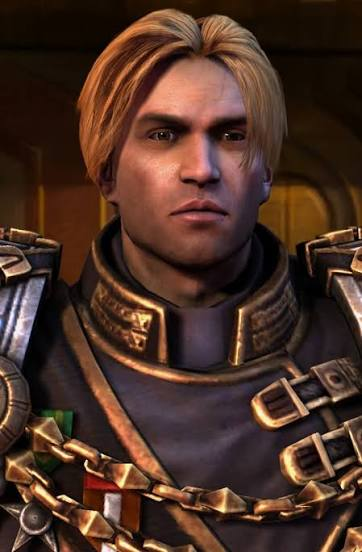
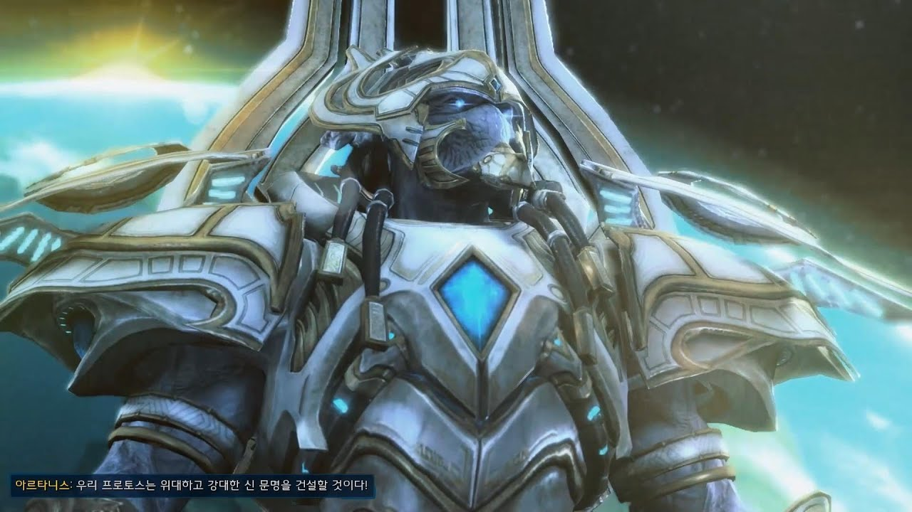
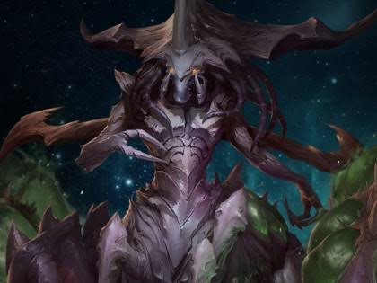
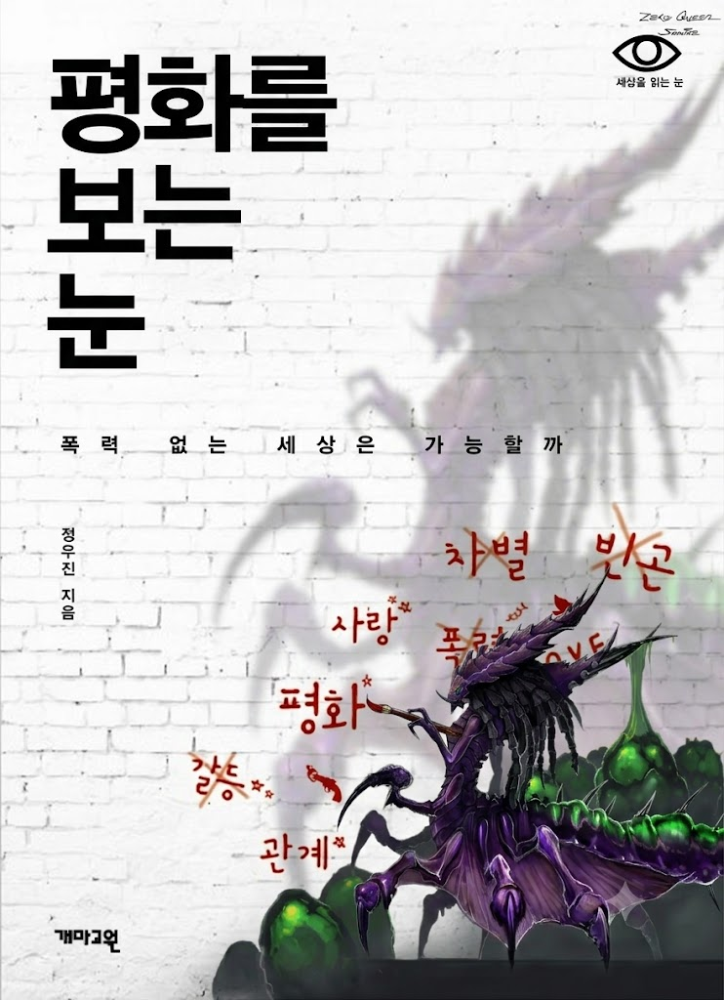

테란 자치령 황제
'발레리안 맹스크'.
- 아빠가 저지른 업보가 많아서 청산하러 다니기 바쁨.
- 아빠한테 충성하던 과격파 새끼들이 반란을 일으킴.
- 3개 세력중 그나마 가장 중립에 가까운 진영이라 외교문제 조율하느라 과로중.
- 같이 굴러야하는 2인자새끼는 젤나가 여친이랑 여행가야한다면서 도망감.
- 열폭하는 아르타니스 말리느라 힘듬.

댈람 프로토스 신관
'아르타니스'
- 명실상부한 프로토스 진영의 1인자로 군림함.
- 자기들이 신의 첫번째자손이라 자부했는데 전쟁이후 진짜 젤나가를 모시던 프로토스 세력이 발견됨. (이한리)
- 상단의 이유와 정작 젤나가를 계승하고 뜻을 함께한건 테란과 저그라는것에 열폭함.
- 강제로 인터넷 끊겼다고 우울증걸린 프로토스들이 늘어나서 골때림.
- 겨우 세력 통합해놨는데 전쟁이 끝나고 평화로워지니 차별혐오가 나타나기 시작함.
- 기계새끼들 인권인정해줬더니 이제와서 원래 태생적으로 엮기기 힘들다고 기어오르기 시작함.
- 상기 이유들로 인해 스트레스가 MAX라서 3자회담장에서 깽판침.

저그 초월여왕
'자가라'
- 3개세력 모두의 전후복구를 위해 환경복원용 테라포밍 생체머신을 만듬.
- 평화를 위한 3자회담을 주최함.
- 무력이 아니라 대화를 통한 협력을 추구함.
- 꽃꽂이한거 발레리안이랑 아르타니스한테 자랑함.
- 타종족의 문화를 존중해 다과까지 준비해둠.
- 프로토스에게는 아이어에 대한 전후복구 지원을 제시함.
- 테란에게는 유전자를 활용한 식량문제 전면해결을 제시함.
- 자기 수하 한놈이 반란일으켜서 입장 곤란해질뻔함. (아바투르)
- 상사가 까먹고 안치운 적대 저그세력으로 인해 입장이 곤란함 (니아드라)

ㅠㅠㅠㅠㅠㅠ 비폭력 평화주의는 자가라 ㅠㅠㅠㅠ
이 글만 보니까 저그 여왕이 제일 정상이네